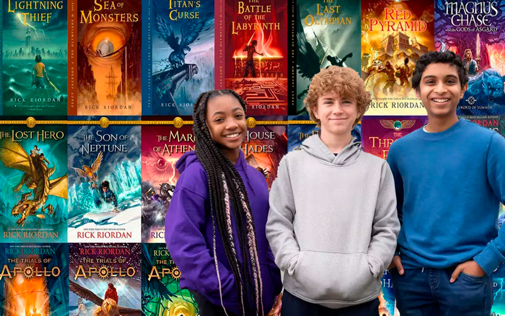

Percy Jackson e o ladrão de raios
A noite da reclamação de Poseidon

Confira Personagens de "Herois do Olimpo"
.jpeg)
Elenco da nova série do Disney+

Percy Jackson e os olimpianos
Os deuses do Olimpo continuam vivos em pleno século XXI! Eles ainda se apaixonam por mortais e têm filhos que podem se tornar grandes heróis, mas que acabam, na maioria das vezes, encontrando destinos terríveis nas garras de monstros sem coração. Apenas alguns descobrem sua identidade e conseguem chegar à Colina Meio-Sangue, um acampamento de verão dedicado ao treinamento de jovens semideuses. Percy Jackson é um deles. Ele tem doze anos e há seis enfrenta problemas nas escolas por onde passa, não só por tirar notas baixas e por ter transtorno do déficit de atenção e dislexia,mas também por seus problemas sempre ocorrerem em circunstâncias estranhas Quando Percy descobre que é filho de Poseidon, o deus dos mares, sua vida ganha outro sentido! Só então sua trajetória heroica se inicia e ele é levado a enfrentar missões importantes que podem comprometer a sobrevivência de toda a humanidade.


Percy Jackson
Percy Jackson é o personagem principal da série Percy Jackson e os Olimpianos. Percy é um semideus grego, filho de Poseidon e Sally Jackson e estuda em uma faculdade em Roma, com sua namorada. Meio-irmão de Tyson. Namorado de Annabeth Chase. Percy nasceu em 18 de Agosto de 1993.
Annabeth Chase
Annabeth Chase é uma semideusa grega, filha da deusa Atena e do professor Frederick Chase, e prima do semideus nórdico Magnus Chase. Annabeth é uma das personagens principais da série Percy Jackson e os Olimpianos, bem como da série Os Heróis do Olimpo, pois ela é um dos Sete semideuses da Profecia dos Sete. Annabeth é a arquiteta do Olimpo e ex-conselheira-chefe do chalé de Atena
Grover Underwood
Grover Underwood é um sátiro da natureza, amigo de Percy Jackson e Annabeth Chase. Ele também foi o sátiro que encontrou Thalia, e mais tarde foi designado para proteger Percy. Ele também descobriu Nico e Bianca di Angelo, todas as crianças dos Três Grandes. Foi ele quem reconheceu Percy como meio-sangue primeiro e o levou ao Acampamento Meio-Sangue.